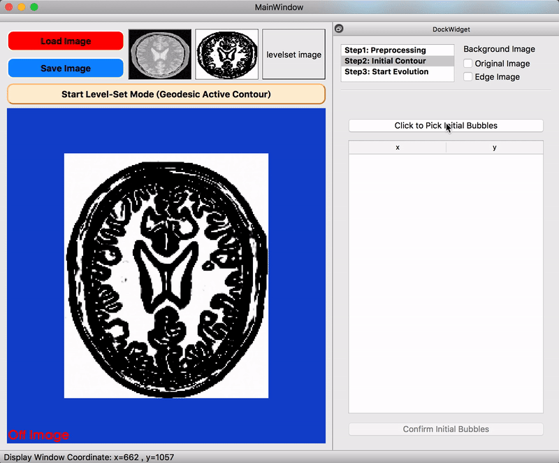

Level-Set-Visualizer
Level-Set Visualizer
Visualize image segmentation based on level set method.
Table of contents
Application Demo
Level-Set Visualizer – Demo (YouTube)
Introduction
This application perform image segmentation by following steps:
- Load Image & Start Level-Set Mode
- Preprocessing
- Initial Contour
- Start Evolution
Preprocessing
- Edge detection by Anisotropic Diffusion, Gaussian Gradient, Sigmoid Scaling
- Control over some edge detection parameters

Initial Contour
- Done by Fast Marching, support multiple bubbles

Start Evolution
- Support media-like control (play/pause/step/rewind) & anchor iteration
- Control over 3 parameters based on Geodesic Active Contour (GAC)
Built With
- ITK 4.12 - Image Processing Algorithms (w/ module
ITKVtkGlue) - VTK 8.2 - Image Display
- Qt 5.6 - GUI framework
Installation
Before running the following command, modify QT_HOME, ITK_DIR, and VTK_DIR in CMakeLists.txt
$ mkdir build
$ cd build
$ cmake ../src
$ make -j4
Acknowledgments
- This application is inspired by ITK-SNAP.
- Processing pipeline & test.png modified from ITK GAC Example
- heart.png modified from ICONFINDER
{kind=link}
{kind=link}